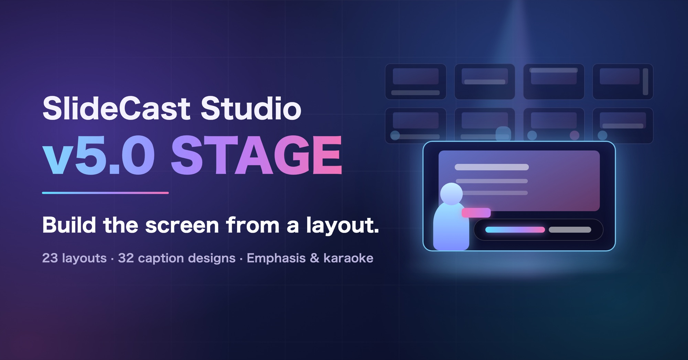

Screen layouts
Choose how captions and characters appear from a table of 23 layouts
SLIDECAST STUDIO · UPDATE
Update — screen layouts, guided project setup, 32 caption designs, emphasis and karaoke

👋 OVERVIEW
🌐 About the screenshots
The interface screenshots on this page use the Japanese edition. The captions explain the relevant controls, and key labels are given in English.
SlideCast Studio is now at v5.0 “STAGE”.
v4.4 “BLOOM” rebuilt the settings screen so you could set things up without guesswork, with presets and dragging on the preview. This release focuses on setting the stage: how slides, captions and characters are arranged on screen, and revisits almost every part of the app. That is why the major version has gone up.
“I don’t know what to decide first when I start.” “I hunt for caption and character positions with sliders every time.” “I want my captions to feel a bit more like a real video.” This update answers those wishes by rethinking how the screen is set up.
Choose how captions and characters appear from a table of 23 layouts
Build a project in four steps: screen, materials, characters, design
Plus name badges and matching looks across a project
Color only the words you pick, and color text as it is read aloud
The screens changed a lot, so you can now check most options without changing anything.
To make SlideCast Studio clearer and easier to use, this release changes the order and logic of the settings quite a lot. If you are used to v4.4, you may sometimes wonder where a setting went.
So this time, you can check most options in the preview just by hovering over them, without changing any settings.
The preview changes only while the pointer is over an option, and goes back when you move away. Your project does not change until you click. Hover and compare first, then choose.
🔎 Can’t find a setting?
Type its name into the search box just below the settings tabs (see “Easier to find, easier to use”).
The screen setup is now just two choices: aspect ratio and layout.
Until now, you combined several items such as how characters are shown, caption layout and writing direction. These are now two choices: aspect ratio and layout (型). You pick the layout from a table of thumbnails.

Three ways to show speech — captions only, characters with speech bubbles, wipe — combined with four placements: below the slide, or overlaid at the bottom, middle or top
Captions only or speech bubbles, overlaid on the right, center or left, or set apart on the right or left
Two characters left and right, characters only, no captions
That makes 23 layouts in all. Examples of new layouts:
After choosing a layout, you only adjust margins, heights and sizes with buttons such as “Small / Medium / Large”. For finer control, “個別” (Custom) lets you enter values. You can grab and move characters on the preview to change their position and size.
Where a character stands and how large it is are now remembered for each project. Changing the placement in one project does not move the characters in others. Use “この配置を既定にする” (Make this the default) to reuse a placement you like in other projects.
From “用途から作成” (Start from a use) on the dashboard, you can set up a whole project in four steps.

If you have not decided on characters yet, placeholder characters A and B are used. You can swap in real characters later with bulk replace.
The recommended uses have been revised for each aspect ratio. They are now named after how they look, not after services such as “YouTube”.
| Ratio | Uses |
|---|---|
| 16:9 | Captions below / Captions overlaid / Captions below, large / Character wipe / Captions slightly raised / Vertical writing / Two characters (vertical writing) |
| 9:16 | Landscape slides / Portrait slides / Landscape slides, large captions |
| 1:1 | Square / Captions below |
| 4:5 | Portrait feed / Captions below |
| 4:3 | Captions below / Captions below, large / Vertical writing |
Designs are grouped into bands, text-fitted bands, outlines, and shadows and glows.
Caption designs have grown from 8 to 32. Just hover over a design and the preview switches to it.

Captions and speech bubbles can now show a name badge for the speaking character. Choose the shape, background and text, or use an image instead of the name. Drag the badge on the preview to place it.
You can make the text look the same across captions and speech bubbles within one project, for the narration and every character. Check it in the preview before applying, and undo it if you change your mind.
Color only the words you pick, or change the color as the text is read aloud.
Select words in the displayed-caption field of the script and press “強調” (Emphasis). Only those words change their look in the caption.


The new karaoke style colors the text up to the point that has been read aloud. Turn it on under “字幕の動き” (Caption motion) in the Captions tab, and set the color under “デザインを調整” (Adjust design) → “カラオケ色” (Karaoke color) in the caption design. The color changes during playback and in exported videos.
Combined with emphasis, an emphasized word takes on its emphasis look only when the reading reaches it, so viewers are not shown what is coming next.
Caption entrance animations have grown from 6 to 22. Besides whole-caption motions such as dropping in, zooming in, bouncing and shaking, characters can also appear one at a time with fade, pop, drop or blur.
For every effect, hovering over a type plays it on repeat in the preview.

| Item | v4.4 | v5.0 |
|---|---|---|
| Transitions | 11 | 21 (30 including directions) |
| Slide animations | 13 | 22 |
| Caption animations | 6 | 22 |
| Badge and text-sticker shapes | 2 | 12 |
A settings search, plus tidier tabs and controls.
There is now a search box just below the settings tabs. Type words such as “帯の余白” (band padding), “BGM” or “APIキー” (API key) to jump straight to that setting.

The “Basic” tab had grown too long, so it is now two tabs: Screen (aspect ratio, layout, background, slide images) and Captions (caption design, caption motion, emphasis).
The “Simple / Advanced” switch added in v4.4 is gone, and there is now a single settings screen. Decide the overall setup quickly with Start from a use and the step buttons, and fine-tune with “個別” (Custom) on the same screen.
Less work preparing scripts and images.
The Bundle Builder link has been updated to a new shared URL.
Smaller usability improvements and bug fixes.
Please check the following before updating.
If you have already bought SlideCast Studio, copy v5.0 from the same shared link in the paid note article.
💾 Make a backup first
If you want to keep your existing projects, library and settings, create a backup from “バックアップ” (Backup) on the dashboard before you update.
To update the Apps Script edition in place, the files to replace since v4.4 are “AppBundle.html” and “無題.html” in the v5.0 distribution folder. Copy them into your existing Apps Script project and redeploy the existing deployment as a new version. (code.gs and the files beginning with “GasAsset_” are unchanged in this release.) If you are unsure, replacing every file is fine too.
Detailed update steps for the Apps Script edition
For the local HTML edition, download “SlideCast Studio v5.0〖ローカル版〗.html” and open it. A new Apps Script project or a different browser will not show your previous data automatically; restore it from a backup in that case.
From videos that simply read slides aloud, to “shows” where characters stand and captions move.
v4.4 “BLOOM” rearranged the settings so you could set things up without guesswork. v5.0 “STAGE” goes one step earlier, letting you start from what stage to show your video on. Choose an aspect ratio, pick a layout from the table, and set the mood with a caption design. With emphasis, karaoke and name badges, the captions themselves can now carry expression.
I have tried to put the whole stage in place for that. If it has been a while, try making one video with Start from a use.
Because so much changed this time, bugs came up again and again during development and took time to fix. There may still be bugs I have not noticed. If you find a problem or something unclear, please let me know in the comments on note.